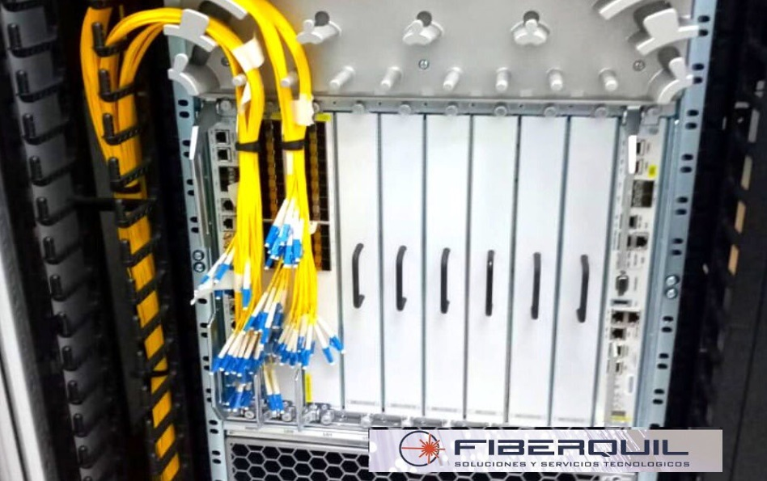
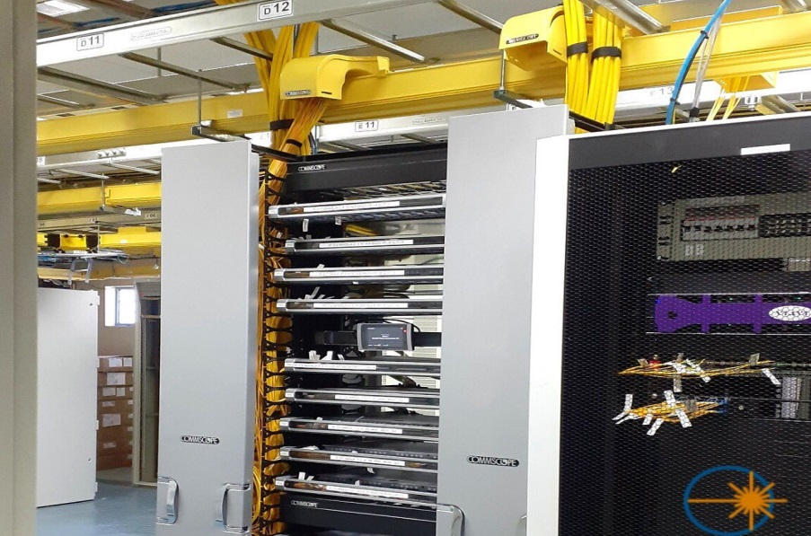

Nuestros servicios
INSTALACIONES DE REDES F.O./UTP, FTTH (FIBER TO THE HOME), SEGURIDAD CIUDADANA, INGENIERÍA Y AUTOMATIZACIÓN, etc.
Posicionándonos como una de las empresas cabeceras en Quilmes y en Córdoba Capital, no sólo en Telecomunicaciones, sino como integradora de soluciones a sus clientes, abarcando distintas áreas como: redes de datos UTP, servicios electrónicos, luminarias LED, controles de acceso, cámaras de seguridad, etc.
Leer más

Especialistas en Fibra Óptica

Homologados FTTH por Telecom Argentina
Mano de obra propia y especializada

Certificación de redes

Despliegue y mantenimiento de planta externa FTTH

Instalación residencial